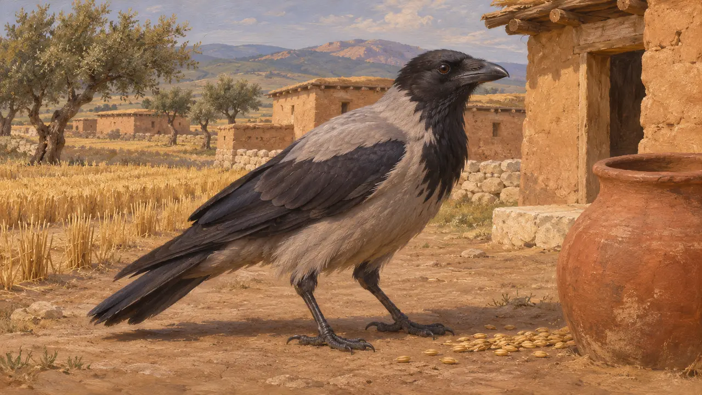
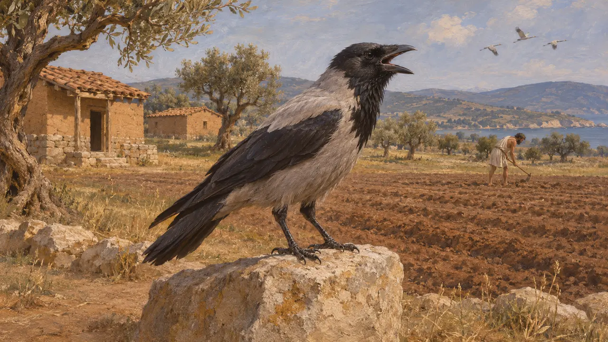
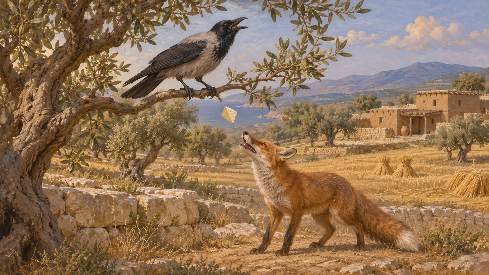

冠鸦是一种身体灰色、头部黑色的乌鸦,栖息于欧洲和西亚大部分地区的开阔地、农田和聚落。它很可能是波斯帝国境内农场、道路和城镇旁常见的鸟。本百科所知的波斯文献没有一篇描述过它,希腊作家提到乌鸦,主要是把它当作天气的征兆,或出现在故事里。
游戏中： 游戏在从帕萨尔加德到普拉提亚的全部十一个关卡中,将冠小嘴乌鸦绘为头顶飞过的野生动物。它只是背景景物,没有任何规则会读取它。

栖于农田与城镇的鸟
争夺中波斯世界的文献都没有描写过灰冠鸦,因此它的出现是根据这种鸟在现代的分布与习性推断而来,并非出自当时的证据。现代鸟类学家把它描述为栖息于开阔地带、农田和聚居地的鸟,以谷物、腐肉和垃圾为食。因此,这类乌鸦很可能生活在游戏所描绘的地方附近,尽管并无记载可证。
Cramp (ed.), Handbook of the Birds of Europe, the Middle East and North Africa, vol. 8, 1994

希腊文献中的乌鸦
古代记述希腊作家对乌鸦十分熟悉。赫西俄德的写作远早于波斯战争,他把鹤的鸣叫和乌鸦的鸣叫视为农人一年农事的征兆。亚里士多德生活在公元前4世纪,在其自然史著作中把乌鸦列入所论的鸟类。这些段落展示的是希腊人如何看待这种鸟,对波斯人的态度则所言甚少。
Hesiod, Works and Days

寓言中的乌鸦
后世传说乌鸦出现在托名伊索的动物故事中，这些寓言是在波斯战争很久之后才被汇集成书的。它们是关于狡黠与虚荣的道德故事，并未说明公元前490年或公元前480年乌鸦的实际习性，不应被当作观察记录来读。
Aesop, Fables
来源
- Cramp (ed.), Handbook of the Birds of Europe, the Middle East and North Africa, vol. 8, 1994
- Hesiod, Works and Days
- Aristotle, History of Animals
- Aesop, Fables